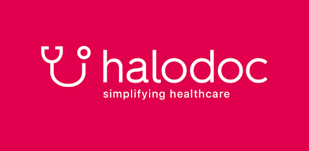

Klik Dokter
Layanan Konsultasi Dokter secara onlen, dan situs yang berisikan artikel-artikel tentang berbagai penanganan penyakit.
Klik Disini
Peduli Lindungi
Sebuah Aplikasi Resmi Dari Pemerintah Yang Menyediakan Berbagai Layanan Kesehatan Baik Itu Layanan Dokter Online Hingga Prosedur Lengkap Penanganan Covid Yang Terkait Dengan Vaksin, dll
Klik Disini